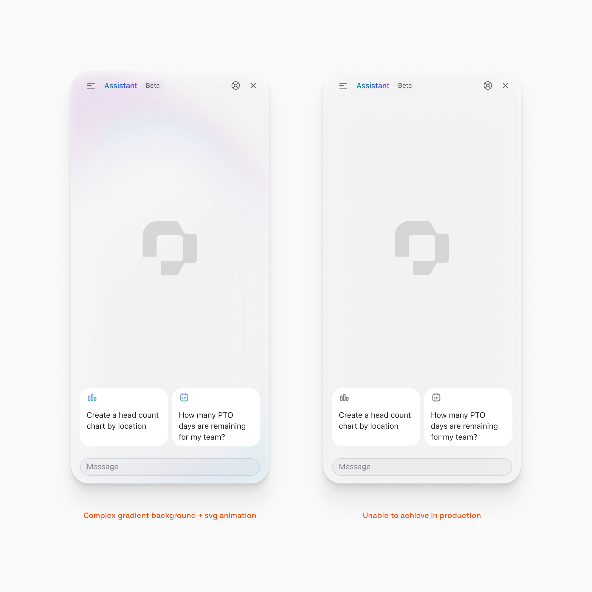
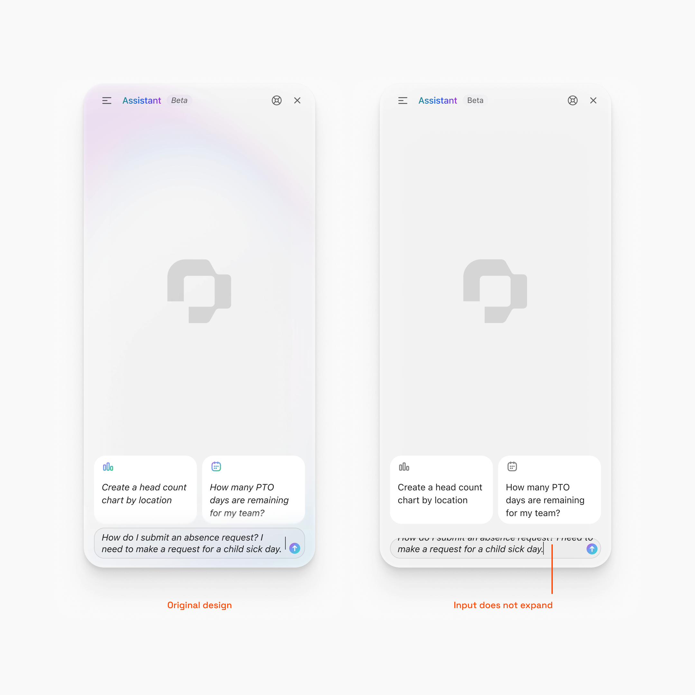
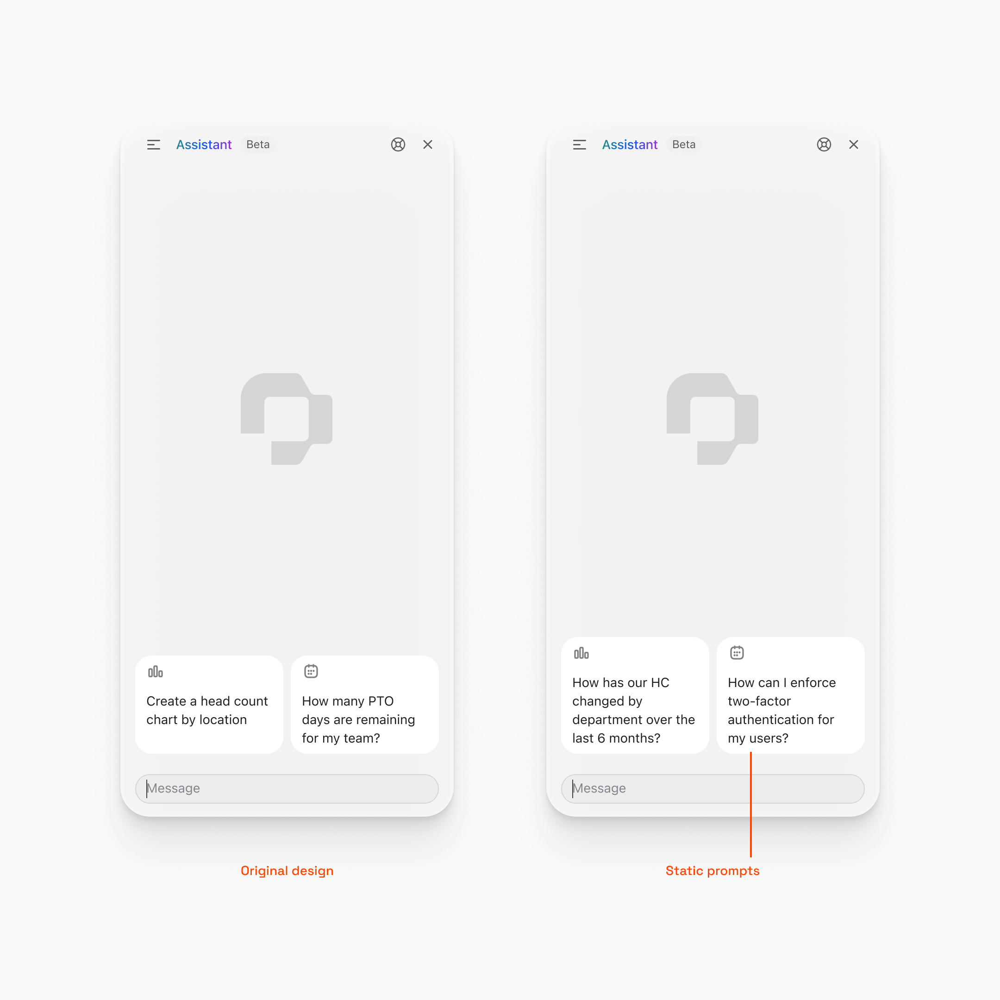
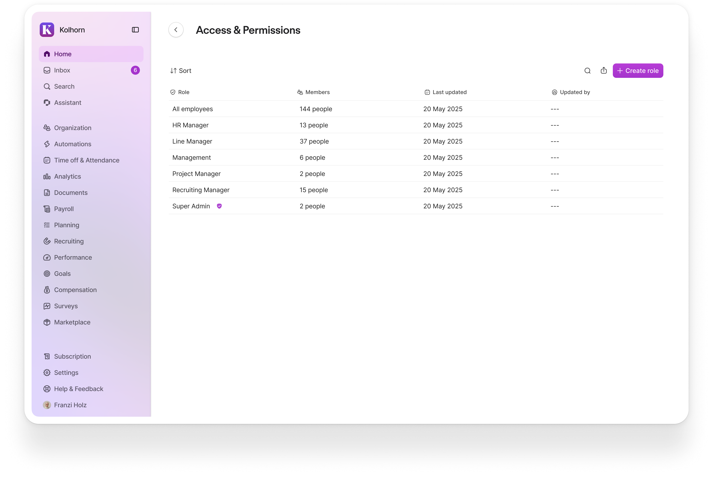
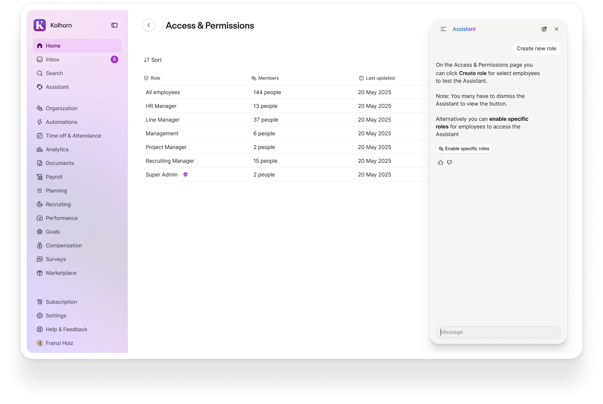
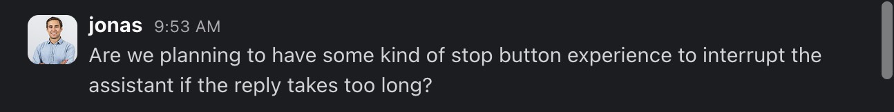
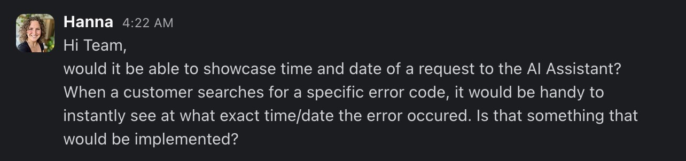
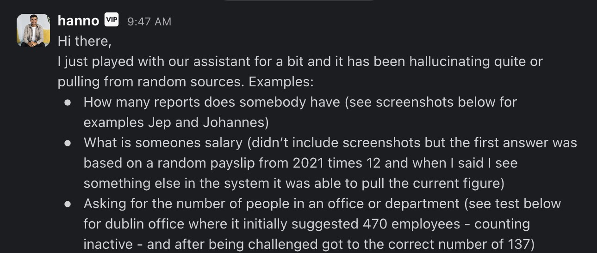

Problem
I inherited beautiful Figma files from an esteemed designer. Elegant, minimalist, futuristic. Production told a different story.
The gaps between design intent and production reality:

Gradient backgrounds never shipped. The shader implementation was complex and hurt performance. The assistant launched with flat colors instead.

Single-line input box. Couldn't accept longer prompts. When users typed multi-line questions, text disappeared behind the field—impossible to review before sending.

Static suggested prompts. Originally designed for admins—but we were about to launch to all employees. "How can I enforce two-factor authentication for my users?" doesn't help someone trying to understand when they'll get their next paycheck.


Floating window obstructing the UI. The assistant covered key elements of the page—especially troubling when it suggested actions hidden beneath itself.
Responses streamed bottom-to-top. Users had to scroll against the flow of new content to read answers.
No stop button. Once a query started, users waited for completion even when the response was clearly wrong.

No source citations. No way to verify where information came from.
No error handling. Generic messages, no timestamps, no way to share details with support.

Meanwhile, CSAT sat at 19%. CEO and COO sent screenshots of wrong answers to the team. The dogfooding channel lit up daily.

The assistant looked like a product problem. It was actually a dozen gaps between design intent and production reality.
Hypothesis
It's not how it looks—it's how it works.
Beautiful mocks had been compromised on the way to production, and no one was closing the loop. I realized that many of these fixes were designs that didn't land with engineers.
Then it occured to me that I should learn how to fix these problems myself. A designer with access to AI can't just design interfaces—they need to understand how to fix bugs, and ship code.
This case study documents my shift toward the practice of designing, building, and shipping.
Process
Phase 1: Following the roadmap
Initially I trusted my PM to guide priorities. We tackled new features that addressed some desired complexity—but I kept noticing things that weren't on the roadmap.
Phase 2: Seeing the gaps
I started cataloging what production actually looked like versus the Figma files. Background styles. Input behavior. Prompt relevance. The list grew.
Phase 3: Figma → Prototype → Production
I began fixing simple things in Figma, then translating them to our internal prototyping tools to test interactions. This got me closer to the code, but still dependent on handoffs.
Phase 4: The push to commit
My manager dangled a carrot: "You could be the first designer at Personio to commit code."
I bit. My first fix: the background color of instructions sent to the assistant.

First production commit — July 10, 2025
Phase 5: Learning the pipeline
My front-end engineer walked me through the PR process—how to address common pipeline failures, how to structure commits for review. He helped me land my first production fix.
From there, I kept going. I made 3-4 production commits between July and October 2025.
Solution
Six improvements, organized by the user journey through the assistant:
1. First Impression: Welcome Mat
Static admin prompts replaced with starter prompts relevant to employees. Designed to demonstrate capabilities through example and reduce cognitive load for new users.

Exploring the evolution of dynamic prompts
Introduced simple prompts to help educate humans
Refined the animation sequence to introduce content
2. Asking Questions: Flexible Input
Single-line input replaced with a flexible field that accommodates 4 lines before truncating. Grows dynamically as users type.
Before: Single-line input truncating question
After: Flexible input showing 4 lines visible
Input field growing dynamically as user types
3. Reading Responses: Flow Direction + Citations
Reversed response streaming from bottom-to-top to top-to-bottom. Added scroll-to-bottom button for longer responses. Implemented source citations so users can verify information.
Before: Bottom-to-top streaming, difficult to follow
After: Top-to-bottom flow with scroll-to-bottom button
Before: Response without citations
After: Response with source citations
4. Controlling the Experience: Stop Button
Added stop button during streaming responses. Users can interrupt at any point instead of waiting for completion.
Before: Response streaming with no stop option
After: Stop button visible during response
Stopping a response mid-stream
5. Taking Action: Navigation Button
Added button that appears when the assistant detects actionable intent. Takes users directly to the relevant screen instead of leaving them to navigate manually.
Before: Answer about taking action, no way to act
After: Response with "Take action" button
Clicking action button and navigating to relevant screen
6. Error Handling: Timestamps + Copy Function
Replaced generic error messages with descriptive explanations, timestamps for debugging, and copy functionality for support escalation.
Before: Generic error message
After: Descriptive error with timestamp and copy button
Unresolved: Floating Window
The assistant's floating position—obstructing the UI it was meant to help with—required more than a UX fix. I explored embedded sidebar approaches in mockups.
Embedded sidebar exploration — assistant alongside content instead of over it
This problem eventually inspired Case Study 2, where I rebuilt the assistant as a Chrome extension using the Sidepanel API—positioning the agent next to the page instead of on top of it.
Results
CSAT improved from 19% to 22%—a 16% relative increase, though still low in absolute terms. These were UX fixes, not accuracy improvements; the number reflects that the underlying model quality remained the bottleneck.
C-suite feedback continued, but the dynamic shifted. They kept sharing screenshots because they knew the team was listening and acting, not because issues were being ignored.
PM feedback on the work
Engineering lead feedback
The bigger impact was organizational. I gave a talk to the entire design organization—delivered while sitting next to the VP of Design, who congratulated me afterward along with designers in the room.
Slack reactions after design org talk
What happened next:
- 5-10 designers have since shipped their own production fixes
- 1-2 designers contributed improvements to the tutorial resources I created
- Documentation and video tutorials now exist for any designer who wants to follow the same path
I made 3-4 production commits between October and December 2024. But the real result is that I'm no longer the only designer at Personio who commits code.
What I Learned
It's not how it looks—it's how it works.
I started this work thinking I could fix a failing assistant with better UX. I shipped six improvements. CSAT moved from 19% to 22%. Designers across the organization started committing code.
But the assistant still gave wrong answers. It still couldn't see the page. The UX layer was no longer the bottleneck—the model's accuracy and context awareness were.
That's the shift: when building with AI, designers can't stop at the interface. We need to understand how the model works, what context it has, when it fails, and why. Otherwise we're polishing a broken engine.
These UX wins bought time. They proved I could ship. But they also taught me where the real problems lived—which led directly to rebuilding the assistant's architecture from first principles.
→ See Case Study 2: Personio Agent Experience (PAX)